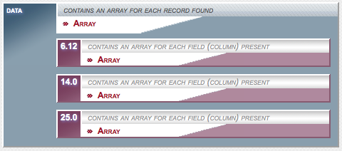
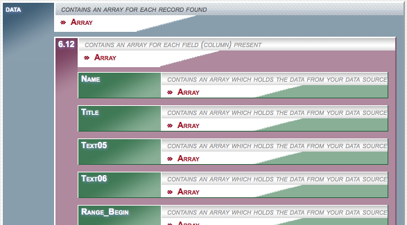
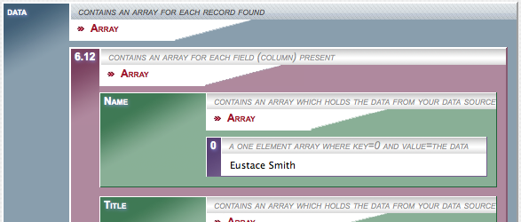

Using the Output from the FX Parser
Displaying Your Results
If you have filled all the parameters of the functions above correctly, and your PHP and database software installations are configured correctly, this page is ready to be displayed.
Know this, however, rarely does the first time prove successful. Learning to setup and configure FileMaker Pro for XML sharing is cumbersome in its own right. SQL data sources each have their own complexities. Adding to that the possible configuration challenges of PHP and your web server software can really complicate things.
Upload this index.php file to your web server and direct your browser to it. If you have blatant PHP errors they will be displayed immediately. If you see the basic FX Parser page displayed then you are close to success.
If your communication with FileMaker Pro was unsuccessful, there are a plethora of possible reasons: sharing configuration and account privileges are the most common issues at first. Either way, you will receive a resulting array from the FX class.
FX Parser will loop through this array and show you all the elements of the first level in red. If any of the elements in this first level contain arrays, FX Parser will give you a link with the following icon:
Any array icon can be clicked on to display it’s contents. If you had a successful query against your database, you will see an element in the first level of the result called "data". Click on the array icon and you will be able to drill down into the sub level arrays to see your resulting data.
If there were errors, you will see elements in the first level array that describe the errors to help you troubleshoot the problem.
The FX Data Set Displayed
If you received a successful data set from your query you will receive and array with 9 elements. The "key" or index of those elements are displayed at the left in white, and are as follows: data, linkNext, linkPrevious, foundCount, fields, URL, query, errorCode, and valueLists.

So the array of our $queryResult has 9 elements. FX Parser shows us those elements and the data that each element contains:
$queryResult['data'] = array $queryResult['linkNext'] = /fx_parser/index.php?skip=3& $queryResult['linkPrevious'] = $queryResult['foundCount'] = 7 $queryResult['fields'] = array $queryResult['URL'] = // the URL created to make the XML request to FileMaker $queryResult['query'] = $queryResult['errorCode'] = 0 $queryResult['valueLists'] = array
Two interesting elements here are the "errorCode" and the "foundCount". It used to be that when no records were returned from a find, the result was simply a foundCount of zero. That's still true of SQL data sources. However, in more recent versions of FileMaker Server, a 401 errorCode is returned, as well. So, if you wanted to check for results and display a "Sorry, no records were found" message, you would simply use the following code (if you're not connecting to a FileMaker database, you can omit everything from the "&&" on):
if($queryResult['foundCount']==0 && $queryResult['errorCode']==401)
echo 'Sorry, no records were found.';
Typically in a web page you want to display the data. Therefore, most of your time is going to be spent working with the contents of the ['data'] element.
Click on the icon in your web browser to see the contents of $queryResult['data'].
In my example, there is were seven found records, so why is it when I click on the Array icon I see only three items in red? Here you see that $recordsPerPage variable in action. You will have one red item in this display for every record in your found result, up to a maximum of $recordsPerPage records.
Notice the key or index for this record: "6.12". That is the internal record ID and modification ID from FileMaker, concatenated together with a period. This becomes important when you use FX to edit and delete records because you need to pass the record ID as a parameter.
In more advanced use cases, the modification ID can optionally be used when editing or deleting records in FileMaker® databases to ensure that the record in question has not changed since it was retrieved by the current user.
If you're using a non-FileMaker® data source, you may note that the key or index for your rows
of data are just integers. This is because most of these options don't have a built-in, internal
row identifier like FileMaker® databases do. That said, FX.php has a function just for this:
SetDataKey($keyField, $modifyField='', $separator='.')
Only the first parameter (usually the column name of your primary key) is required, and it gives you the
same functionality as the built-in FileMaker® items.
So to recap, inside the data element is an array with an element for each found record up to a specified maximum — three in the current example. The keys for those elements are 6.12, 14.0, and 25.0; and the contents (or value) of each of those elements is... another array!
Again, click on the icon to see what's inside. Remember we are now looking at the contents of $queryResult['data']['6.12'].
My example:
The contents of the "6.12" element are now visible. Remember, this is another array. Inside the "6.12" element is an array shown in green and it has elements for every field on the layout you specified. My layout has more fields on it than I care to display here, but you can see the first six elements and their keys (or indexes).
The keys for this array are the names of the fields. Remember, each element in and array has a key and a value and in this instance the keys are the field names, the values are... more arrays! (I would like to reassure you at this point that you have not, in fact, opened Pandora's box, and this is the last level of nested arrays. Isn't that a relief?)
Let's reflect on where we are. We are looking at the variable $queryResult. This is the variable that you made equal to $query->FMFind() remember:
$queryResult = $query->FMFind();
Inside the $queryResult variable is an array with a 'data' element.
$queryResult['data'];
Inside the data element is an array with an element for each record in the found set, up to a maximum of $recordsPerPage. We selected the first record with a key of the recID.modID of 6.12.
$queryResult['data']['6.12'];
Inside the 6.12 element is an array with an element for every field on the specified layout. These elements contain keys and values. The key is the name of the field, the value is another array.
Click on the icon to display the contents of one of the field elements.
I clicked on the icon for the "Name" field. It's content is another array with only one element. That element is the holy grail of all the the array elements: it is always going have a key of zero, and its value will be the field contents.
Okay, perhaps I should have said "almost always going to have a key of zero." The exceptions are when dealing with either fields in a portal, or repeating fields — both items specific to FileMaker®. In these cases, there will be one array element (with indexes starting at zero) for each row in the portal, or each field repetition. It's also useful to note that the XML output honors options that you set on the layout in FileMaker® Pro. So, if you only display four repetitions out of ten, only four will be returned in the XML; or, if you limit your portal to three rows, three will be the maximum number of rows returned. One more caveat: if the scroll bar option for your portal is turned on, then all rows of the portal will be returned, regardless of the number displayed — use caution!
So we have taken the variable $queryResult, gone into the data element, then the 6.12 element, then the Name element, and finally the 0 element. How do you output this to your web page? Like so:
echo $queryResult['data']['6.12']['Name'][0]; // prints to the browser, "Eustace Smith"
At some point you're sure to think: "Wow! Constant use of the data element and a trailing zero gets really repetitive!" I agree. In fact, there are optional parameters that allow you to not have do deal with them in your data. Perhaps better still, the DoFXAction() function defaults to this behavior. (Keep in mind you will need that last layer for repeating fields or portals.) As for the other data in the top level, e.g. foundCount, errorCode, etc.; since you're working with an object ($query in this example) you can still access all of that information directly from the object. And like functions, -> is used for this. See the functions documentation for more details.
The FX Parser shows you visually each array and it's elements. You can drill down by clicking on the links. You can also see a straight text display of the whole result set, parsed out in mono font, with colored syntax, by click on the TEXT ONLY link at top.
This is only one example how to use the FX Class. See the FX Functions document to learn how FX can be used to it’s fullest capacity. No matter what the FX function, you can use the FX Parser to display the results and help understand the array structures.